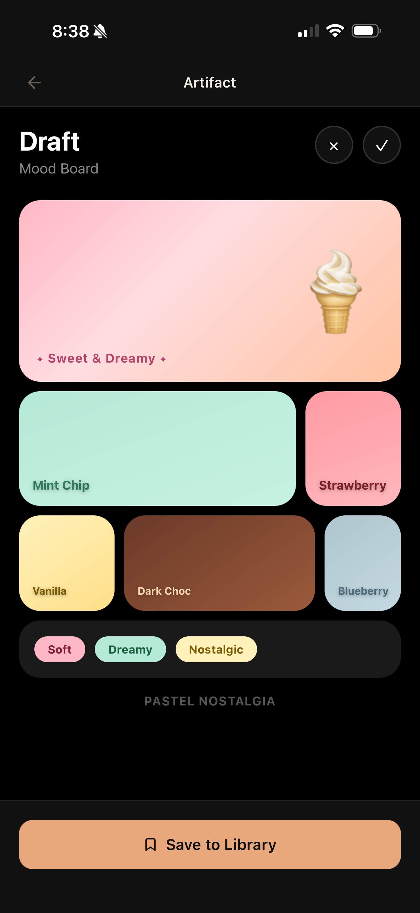
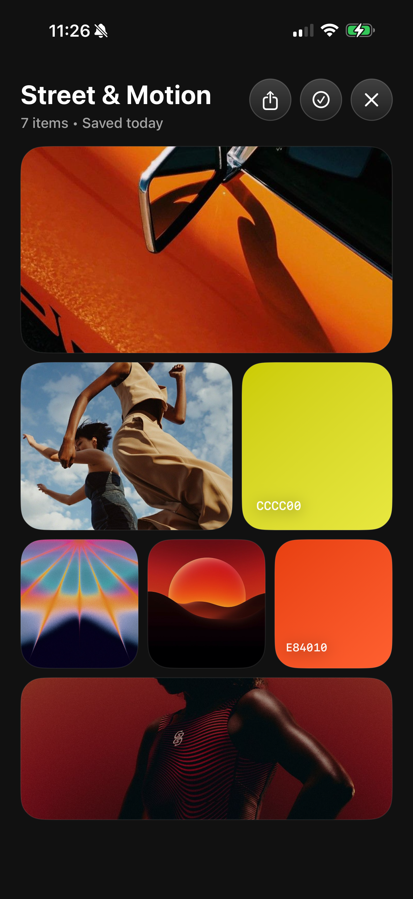

DRAFT • iOS • PARSONS CAPSTONE • 2025
Built for the moment before the work starts.
Overview
Speak an idea. See three directions.
Draft is a native iOS app that turns a spoken idea into visual creative directions. You speak a prompt and it generates three directions across four output types: color palettes, UI layouts, image collections, and moodboards.
Built for the moment between having an idea and sitting down to start. Not at your desk, not with your laptop open, but on your phone when the thought is still there.

The Problem
The Tools That Exist Are Not Built for This Moment
I have always thought in images before I think in words. When a creative direction comes to me, I need to get it out and see it immediately, wherever I am.
The tools that exist right now are not built for that. Replit and Lovable are too technical and too restrictive. You have to write out exactly what you want and you end up stuck iterating inside them. Draft is intentionally a first pass. It is not meant to be continued inside the app. None of the existing tools are built that way.
There was also a more practical problem. When you are working with developers across time zones and need to communicate a creative direction quickly, there is no fast way to send something visual. A voice memo is just more words. A Pinterest screenshot needs explaining. I needed to speak a direction and hand someone something they could actually look at.
Replit
Lovable
Draft — Voice

Draft — Artifact
Research Insights
Every Tool in This Category Makes the Same Assumption
I audited the major AI creative tools, Replit, Lovable, and a few others, and looked at two things: how they take input and what they give back.
The pattern was the same across all of them. Input is text, usually detailed and technical. Output is code. The whole thing assumes you already know what you want precisely enough to write it down, and that what you want at the end is something buildable.
Three things kept coming up:
Defining the Opportunity
The Thing That Comes Before the Work
Draft was never meant to replace the tools designers use for finished work. It is the thing that comes before. The first draft of a direction, captured before it disappears, is visual enough to be useful.
I scoped it around four artifact types that map to the earliest stage of creative thinking: color, UI, imagery, and moodboard. Three directions per prompt was a deliberate constraint. Enough range to react to, not so many that choosing becomes its own problem.
The bar I kept coming back to: whatever Draft produces should be something a designer would screenshot and drop into a Slack message. Not hand off to an engineer. Not present in a meeting. Just send, so a conversation can start.
Design Exploration
Switching to Swift Was a Design Decision
The first build was in React Native. It worked, but it felt wrong. Everything moved like a web app wrapped in a phone shell, interactions were sticky, and nothing about it communicated the warmth or fluidity the app needed. It looked like a utility. Draft needed to feel more like a sketchbook.
Switching to Swift was a design decision as much as a technical one. Native iOS rendering changed how the whole app felt to hold and actually use. The difference between the two builds is visible immediately when you put them next to each other.
The home feed presented its own problem. The APIs could generate content but could not consistently produce imagery that held together aesthetically. So I curated some of it with locally sourced images, renamed to match keyword triggers, so the first thing a user sees feels considered and intentional. Live API content takes over for everything generated after that.


Test & Iterate
Build, Look at It, Ask If It Feels Right
I did not run formal user testing sessions. What I did instead was build, look at it, and ask whether it felt like the product I had set out to make.
The React Native to Swift rebuild was the biggest iteration of the project. It was not a small call to make mid-timeline, but the version I had did not feel right and I could not ship something that looked wrong.
The home feed went through several rounds of curation. Early API generations were inconsistent and broke the aesthetic of the experience, so I built a hybrid system where curated local assets anchor the feed and live API content handles everything generated. That balance took time to get right.
The three-direction model stayed fixed throughout. Every time I questioned whether to change it, keeping it felt more right than adjusting it.
Final Product
Speak a Direction. See Three Versions. Send the One That Fits.
Draft is live at lucytrep.com/draft (way cleaner on mobile).
The app opens to a home feed of generated artifacts. You tap the microphone, speak a direction, and three creative outputs appear across four types: color palettes, UI layouts, image collections, moodboards. Everything in the feed is saveable. The session is disposable. Draft is not where you finish things. It is where you start.
Impact
"Voice to moodboard."
Someone who attended the showcase posted about the night on X. They listed the projects in the room. Draft made the list as "voice to moodboard."
That description, written by someone who had just used it for thirty seconds, was a good sign that the core idea was landing.
The NFC tags were tapped throughout the night. People pulled up the marketing site on their own phones and a few people tested the app and spoke prompts they came up with themselves.


Reflection
I Wanted to Build a Tool I Needed
I have always processed ideas visually before I can put them into words. Draft came directly from that frustration: having a direction and no fast way to hand it to someone from my phone without switching into a completely different mode.
The thing I am most proud of is that voice is genuinely the entry point. Not a toggle, not a feature buried in settings. The whole interaction model is built around it, and that decision came from something real.
If I could go back, I would make the Swift decision earlier. The rebuild was the right call and I would make it again, but doing it sooner would have bought more time to develop the artifact system further.
Presentation
Index Design Studios, Chinatown, New York
Draft was presented at Index Design Studios in Chinatown, New York as part of the New School MPS capstone showcase. The format was gallery-style. People moved through the space at their own pace and stopped where something caught them.
I set up with a looping product video on an iPad, NFC cards you could tap to open the marketing site or save my contact directly to your phone, stickers, and a live device anyone could pick up and try.
Draft is something you have to touch to understand. Reading about voice-first generation does not land the same way as speaking a prompt and watching three directions appear. The gallery format made that possible.